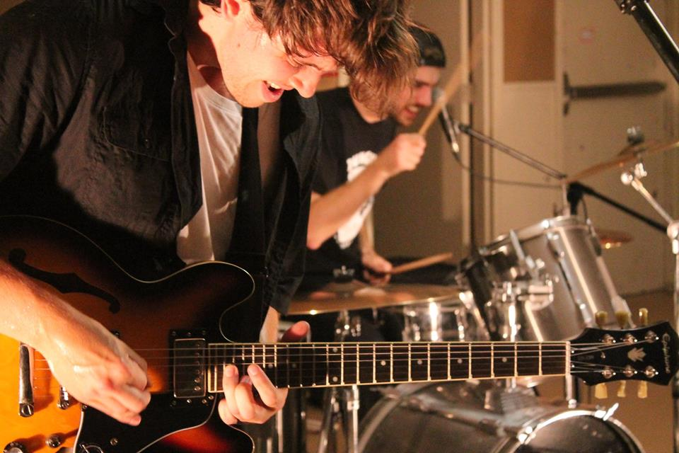

Article and Video By Alina Bykova 
Uploaded on September 28, 2015
Today they have an upbeat, raw sound, inspired by alt rock bands like the Black Keys.
Zach Henderson is strumming his guitar so hard sweat is dripping off his face. He shakes his head as the song builds intensity and his white bandana flies off and lands on the floor by Juan Udarbe’s feet, who is hitting the bass line hard. Behind Udarbe, Dave Silani is working the drums. Their band is called Little Boxer, and they’re jamming at the Sigma Chi Fraternity House at the University of Toronto.
Despite their alternative rock sound today, the band started off as a folk duo. Originally, the band was made up of Henderson and Silani, who played an array of instruments to compensate for their lack of band members.
“The band started off very folky, with lots of acoustic guitar,” says Henderson. “But it’s hard to have high energy when you’re playing folk.”
Then Udarbe joined as a temporary bass in August 2014, and they liked him so much he stayed for good.
Udarbe, a hard rocker, previously played in a heavy metal band. His arrival changed the band’s sound, pushing into the realm of rock. That’s when Little Boxer really found their groove.

The band’s name – Little Boxer, was chosen right before Henderson and Silani’s first show at Ryerson’s Battle of the Bands. It was one of the first ideas they had and the name stuck.
Silani has not only created a record label, but has also unified a collective of Toronto musicians.
While the band loves being a small ensemble – “Zach rolls around on the stage, there would be no space to do it if the band was larger,” says Silani, there are some setbacks to being a smaller band.
“A trio is both an asset and an issue,” says Udarbe, “We want to be able to make a deeper sound, which is difficult when we only have three instruments.”
Nonetheless, the band has big plans for the foreseeable future. Their album will be out by the end of the season, and they have two more shows at the Smiling Buddha and Cameron House over the course of the next two months. After that, they will be taking a break from the performance life and will be focusing on making more music.
“It’s a toss-up between trying to be seen and trying to work on our stuff,” says Silani.
The band will also be working through Dungus Records, a record company which was started by Silani about a year ago. Dungus Records is a group of 11 people who are part of local bands, like Little Boxer, The Lifers and Mayraki, many of whom have been profiled by Musicians@Ryerson in the past.
“It’s like a community,” he says, “like Wu-Tang Clan or ASAP Rocky.”
The members of Little Boxer will also be working with The Lifers to help them with their new album.
Back at Sigma Chi, the set is over and the trio smile as they pack up their instruments. They nod to their friends from the band Mayraki, who will take the stage next.
Check out Little Boxer at http://www.dungusrecords.com/littleboxer/
Spotlight Editor in Chief
Alina Bykova
alina.bykova@ryerson.ca
Want to get your time under the lights? Are you a writer looking to join the Artist Spotlight initiative? E-mail us at music@ryerson.ca to see how!